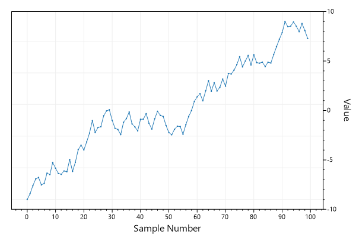
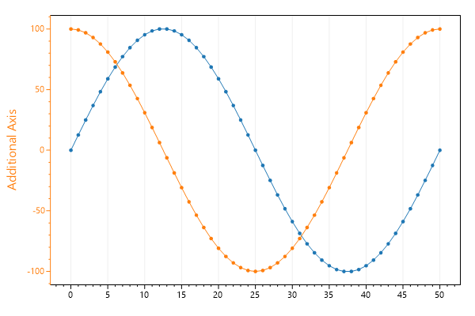

ScottPlot Cookbook: Multi-Axis
⚠️ Documentation is version-specific: This page was generated forScottPlot 4.1.4-beta
Additional documentation and more version-specific cookbooks are on the ScottPlot Website
Primary Axes
Plots always have 4 fundamental axes available to work with. Primary axes (XAxis and YAxis) are axis index 0. Secondary axes (XAxis2 and YAxis2) are axis index 1.By default primary axes are totally visible, and secondary axes have ticks hidden and no label. Sometimes the top axis (XAxis2) is given a label to simulate a plot title.var plt = new ScottPlot.Plot(600, 400);
// plot one set of data using the primary Y axis
var sigSmall = plt.AddSignal(DataGen.Sin(51, mult: 1), sampleRate: 1);
sigSmall.YAxisIndex = 0;
sigSmall.XAxisIndex = 0;
plt.XAxis.Label("Primary X Axis");
plt.YAxis.Label("Secondary Y Axis");
plt.XAxis.Color(sigSmall.Color);
plt.YAxis.Color(sigSmall.Color);
// plot another set of data using the secondary axes
var sigBig = plt.AddSignal(DataGen.Cos(51, mult: 100), sampleRate: 100);
sigBig.YAxisIndex = 1;
sigBig.XAxisIndex = 1;
plt.YAxis2.Ticks(true); // ticks weren't visible by default
plt.XAxis2.Ticks(true); // ticks weren't visible by default
plt.YAxis2.Color(sigBig.Color);
plt.XAxis2.Color(sigBig.Color);
plt.YAxis2.Label("Secondary Y Axis");
plt.XAxis2.Label("Secondary X Axis");
plt.SaveFig("multiAxis_primary.png");

Additional Y Axis
Additional axes can be added on any edge. Additional axes stack away from the plot area.var plt = new ScottPlot.Plot(600, 400);
// plot one set of data using the primary Y axis
var sigSmall = plt.AddSignal(DataGen.Sin(51, mult: 1));
sigSmall.YAxisIndex = 0;
plt.YAxis.Label("Primary Axis");
plt.YAxis.Color(sigSmall.Color);
// plot another set of data using an additional axis
var sigBig = plt.AddSignal(DataGen.Cos(51, mult: 100));
var yAxis3 = plt.AddAxis(Renderable.Edge.Left, axisIndex: 2);
sigBig.YAxisIndex = 2;
yAxis3.Label("Additional Axis");
yAxis3.Color(sigBig.Color);
plt.SaveFig("multiAxis_additional.png");

Right Y Axis
This example shows how to display a Y axis only on the right side.var plt = new ScottPlot.Plot(600, 400);
double[] values = DataGen.RandomWalk(100);
plt.AddSignal(values);
plt.YAxis.Ticks(false);
plt.YAxis2.Ticks(true);
plt.YAxis2.Label("Value");
plt.XAxis.Label("Sample Number");
plt.SaveFig("multiAxis_right.png");

Axis Visibility
Visibility of axes can be toggled. In this example an additional Y axis is added but the primary Y axis is hidden. The result is a plot that appears to only have one Y axis.var plt = new ScottPlot.Plot(600, 400);
// plot one set of data using the primary Y axis
var sigSmall = plt.AddSignal(DataGen.Sin(51, mult: 1));
sigSmall.YAxisIndex = 0;
plt.YAxis.Label("Primary Axis");
plt.YAxis.Color(sigSmall.Color);
// plot another set of data using an additional axis
var sigBig = plt.AddSignal(DataGen.Cos(51, mult: 100));
var yAxis3 = plt.AddAxis(Renderable.Edge.Left, axisIndex: 2);
sigBig.YAxisIndex = 2;
yAxis3.Label("Additional Axis");
yAxis3.Color(sigBig.Color);
// hide the primary Y axis
plt.YAxis.IsVisible = false;
plt.SaveFig("multiAxis_invisible.png");
